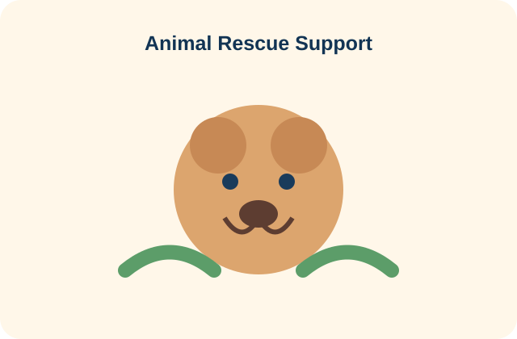
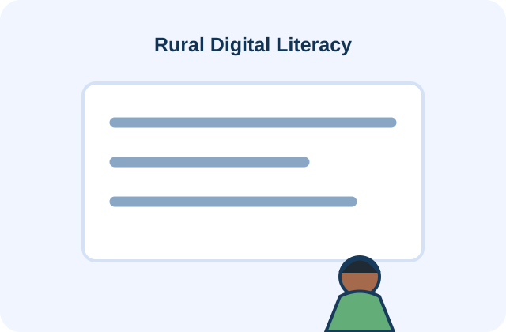

Scattered WhatsApp groups
Important updates get buried in chats.
VOLUNTEER+ replaces scattered WhatsApp groups, paper rosters and manual attendance with one responsive platform for discovering events, registering volunteers, tracking service and issuing digital certificates.


Important updates get buried in chats.
Forms and spreadsheets slow down onboarding.
Manual check-ins make records harder to manage.
Service hours can be difficult to consolidate.
Participation records often need manual follow-up.
One simple digital workflow for discovering, joining and documenting community service.
Browse opportunities by category.
Join with a few simple interactions.
Demo QR-based check-in flow.
View contribution progress.
Keep participation records together.
Find nearby volunteering opportunities.
Join an event in a few clicks.
Use QR-based check-in.
Complete the assigned service activity.
Receive a digital participation certificate.




These are demo/sample values for the college prototype.
Demo data only — this frontend does not connect to a database.
Join a volunteering opportunity or demonstrate an organization workflow.